About Me
I am a third-year Ph.D. candidate with the Visual Intelligence and Multimedia (VIM) and Intelligent Media Analysis Group (IMAG) at the School of Computer Science and Engineering, Nanjing University of Science and Technology (NJUST), where I am fortunate to be advised by Prof. Xiangbo Shu .
I am currently a visiting Ph.D. student at the LV Lab , National University of Singapore (NUS), under the supervision of Prof. Shuicheng Yan (Fellow of AAAI, ACM, SAEng, IEEE, and IAPR). Previously, I was a research intern at Zhejiang University, working with Prof. Wenguan Wang , and at the Ming Team of Ant Group.
Research Interests
My research interests span Video Understanding (e.g., Video LLMs and Video Agents), Embodied AI , Video Generation , and Efficient AI .
Video Understanding Video LLMs, Video Agents, Streaming Video Interaction, and Action Recognition.
Embodied AI Vision-Language-Action Models (VLAs), Embodied Perception, and World Action Models.
Video Generation Video World Models, Interactive Video Generation, and Streaming Video Generation.
† Equal contribution · ‡ Project leader · arXiv entries are preprints · Google Scholar citations: 511 (as of 2026-11-26 ) · Accepted: 4 first-author (1 TPAMI, 1 ICLR, 1 NeurIPS, 1 TMM) / 5 co-first-author (1 ECCV, 1 ICML, 1 CVPR, 1 IJCAI, 1 TGRS) (excluding preprints).
All Video Understanding (eg. Video LLM, Video Agent) Embodied AI Efficient AI
Showing 19 of 19 publications
TPAMI 2026 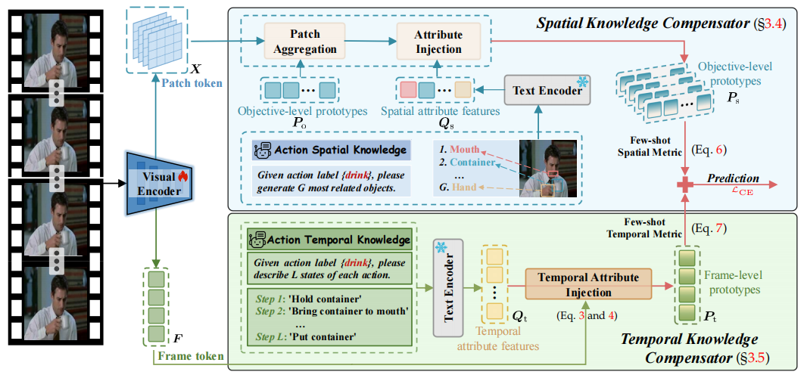
Hongyu Qu , Xiangbo Shu, Rui Yan, Hailiang Gao, Wenguan Wang, Jinhui Tang
IEEE Transactions on Pattern Analysis and Machine Intelligence (TPAMI ), 2026.
ICLR 2025 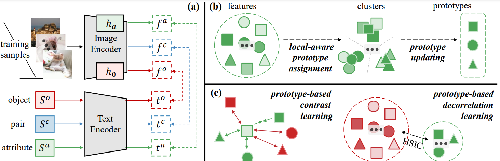
Hongyu Qu , Jianan Wei, Xiangbo Shu, Wenguan Wang
International Conference on Learning Representations (ICLR ), 2025.
NeurIPS 2025 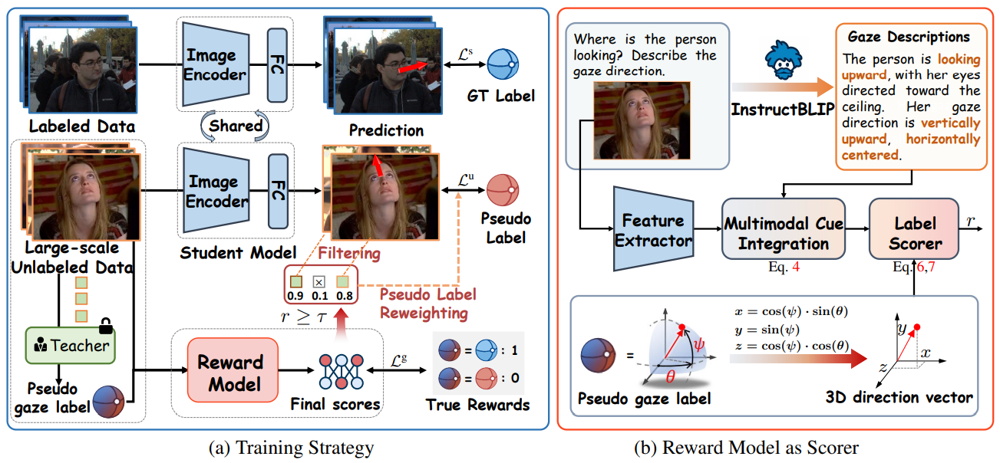
Hongyu Qu , Jianan Wei, Xiangbo Shu, Yazhou Yao, Wenguan Wang, Jinhui Tang
Annual Conference on Neural Information Processing Systems (NeurIPS ), 2025.
TMM 2025 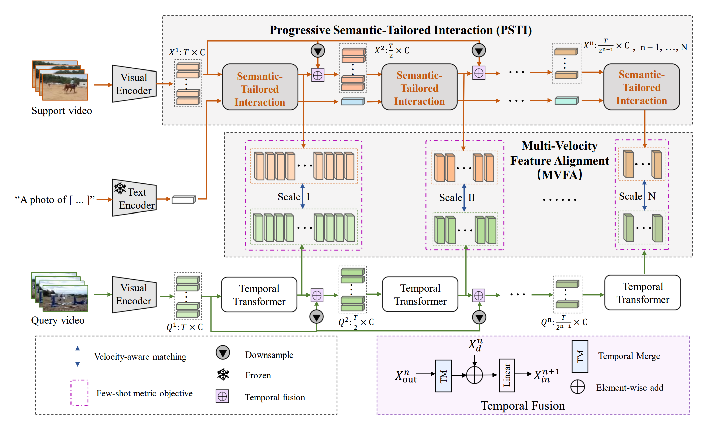
Hongyu Qu , Rui Yan, Xiangbo Shu, Hailiang Gao, Peng Huang, Guosen Xie
IEEE Transactions on Multimedia (TMM ), 2025.
ECCV 2026 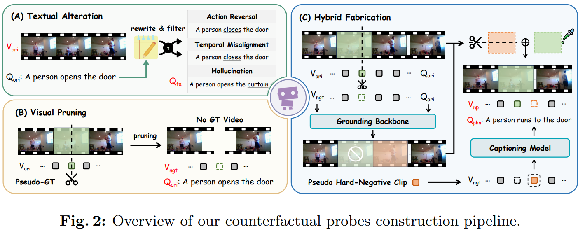
Test-time Counterfactual Calibration for Hallucination-Resistant Temporal Grounding Chufan Yi† , Hongyu Qu † , Shiyu Xuan, Rui Yan, Xiangbo Shu, Fang Zhao, Guo-Sen Xie
European Conference on Computer Vision (ECCV ), 2026.
Paper link to be updated [Code] ICML 2026 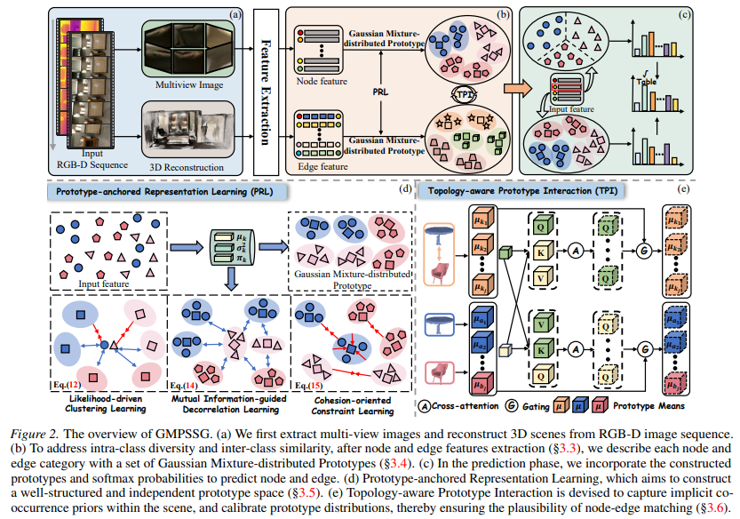
Rongxing Ding† , Hongyu Qu † , Xinguang Xiang, Pengpeng Li, Xiangbo Shu
International Conference on Machine Learning (ICML ), 2026.
CVPR 2026 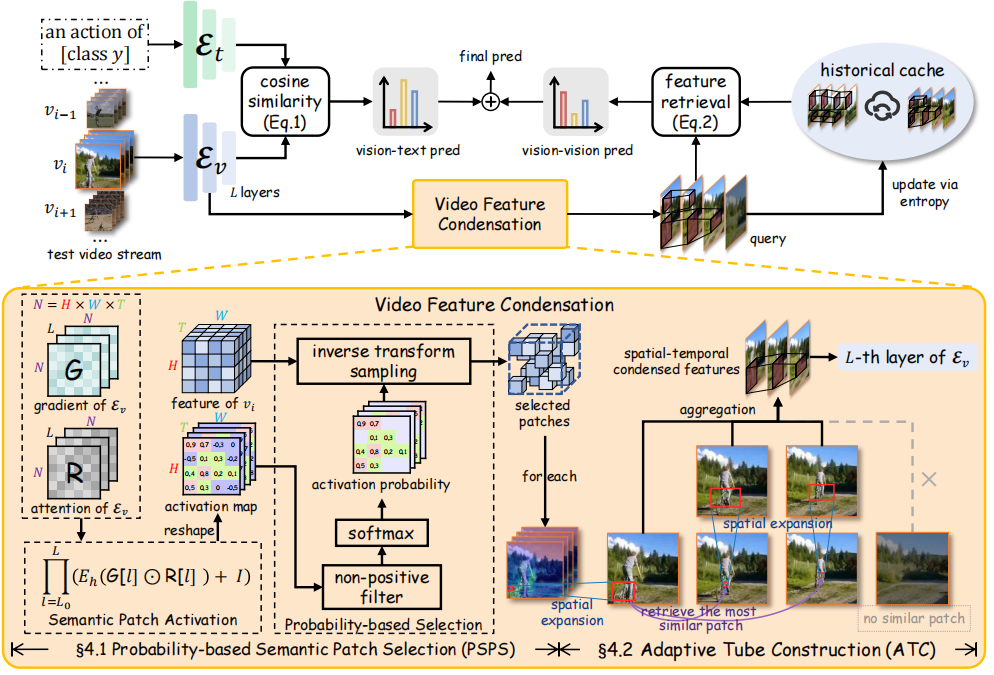
Wenxuan Ge† , Hongyu Qu † , Rui Yan, Guosen Xie, Yazhou Yao, Xiangbo Shu, Jinhui Tang
IEEE Conference on Computer Vision and Pattern Recognition (CVPR ), 2026.
IJCAI 2024 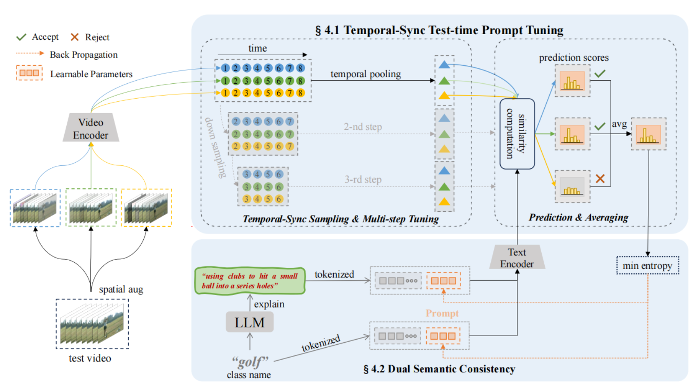
Rui Yan† , Hongyu Qu † , Xiangbo Shu, Wenbin Li, Jinhui Tang, Tieniu Tan
International Joint Conference on Artificial Intelligence (IJCAI ), 2024.
TGRS 2023 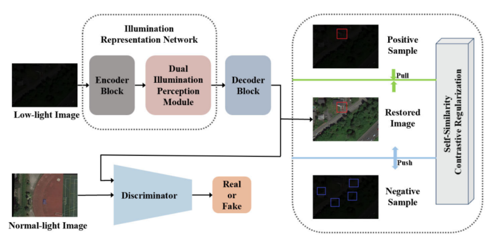
Ling Xing† , Hongyu Qu † , Sheng Xu, Yao Tian
IEEE Transactions on Geoscience and Remote Sensing (TGRS ), 2023.
arXiv 2026 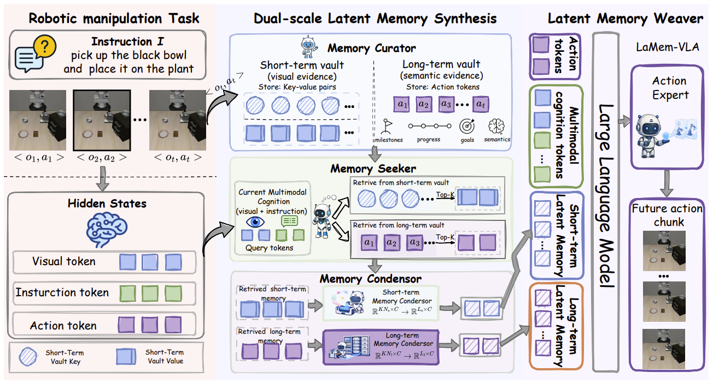
Hongyu Qu , Jianzhe Gao, Xiaobin Hu, Shaohuan Yang, Xinlei Yu, Rui Yan, Wenguan Wang, Xiangbo Shu, Shuicheng Yan
arXiv preprint arXiv:2607.07608, 2026.
arXiv 2026 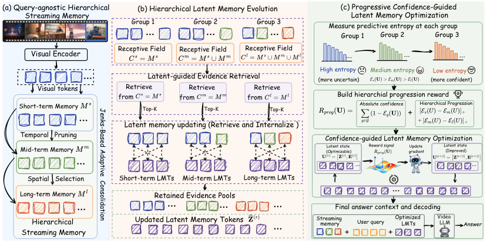
Hongyu Qu , Guangming Yao, Ling Xing, Xiaobin Hu, Rongxing Ding, Guibin Zhang, Fan Zhang, Yi Yuan, Xiangbo Shu, Shuicheng Yan
arXiv preprint arXiv:2609.04131, 2026.
arXiv 2025 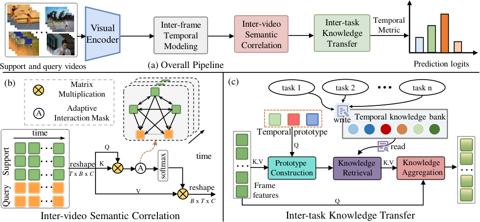
Hongyu Qu , Ling Xing, Jiachao Zhang, Rui Yan, Yazhou Yao, Xiangbo Shu
arXiv preprint arXiv:2504.10079, 2025.
arXiv 2026 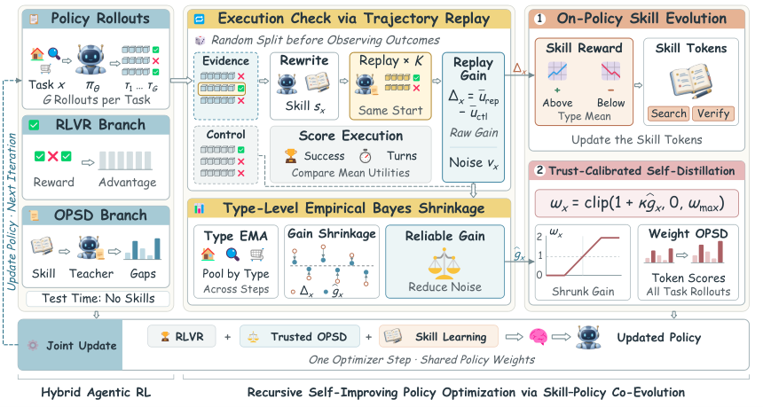
Fan Zhang, Hao Wu, Jinyang Wu, Hongyu Qu , Zheng Lian, Xiao Luo, Yefeng Zheng, Bo Zhang, Haoxuan Li, Pheng-Ann Heng
arXiv preprint arXiv:2610.15772, 2026.
arXiv 2026 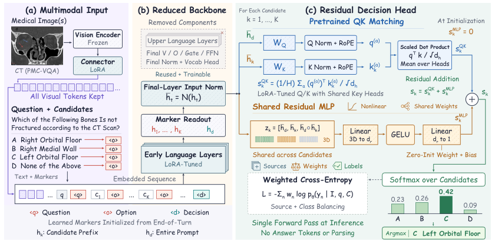
Fan Zhang, Hao Wu, Jinyang Wu, Hongyu Qu , Zheng Lian, Dongfu Yin, Qingsong Wen, Pheng-Ann Heng
arXiv preprint arXiv:2611.20992, 2026.
arXiv 2026 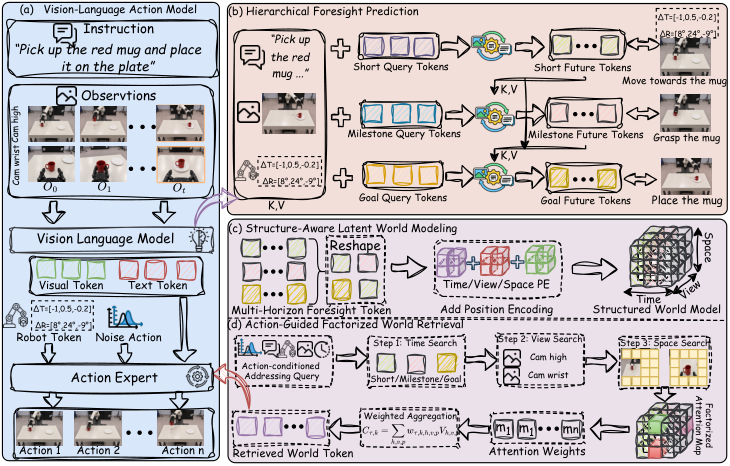
Rongxing Ding, Hongyu Qu ‡ , Kehong Wu, Xudong Wang, Fan Zhang, Xinguang Xiang, Xiangbo Shu
arXiv preprint arXiv:2610.40373, 2026.
TCSVT 2025 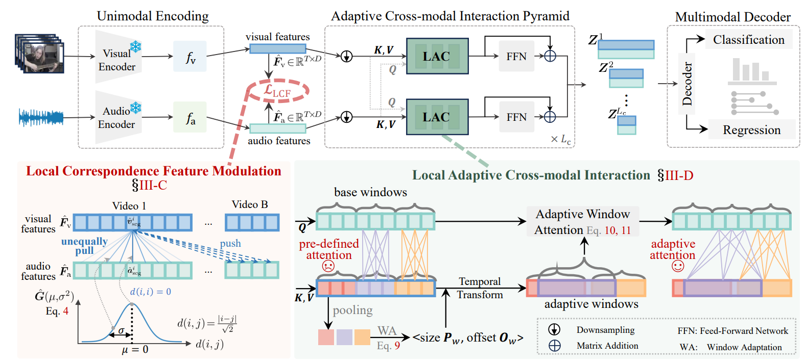
Ling Xing, Hongyu Qu , Rui Yan, Xiangbo Shu, Jinhui Tang
IEEE Transactions on Circuits and Systems for Video Technology (TCSVT ), 2025.
IJCAI 2025 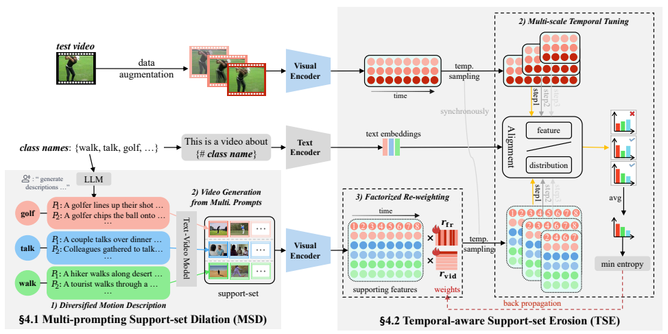
Rui Yan, Jin Wang, Hongyu Qu , Xiaoyu Du, Dong Zhang, Jinhui Tang, Tieniu Tan
International Joint Conference on Artificial Intelligence (IJCAI ), 2025.
IJCAI 2025 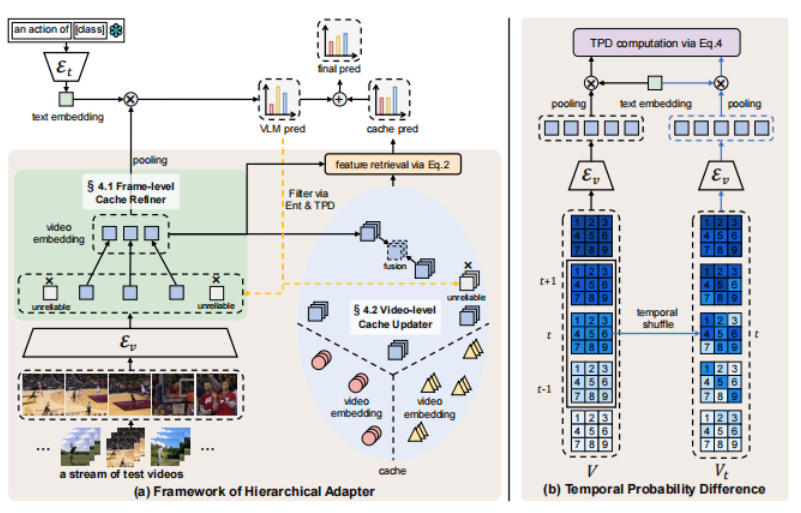
Wenxuan Ge, Peng Huang, Rui Yan, Hongyu Qu , Guosen Xie, Xiangbo Shu
International Joint Conference on Artificial Intelligence (IJCAI ), 2025.
TMM 2024 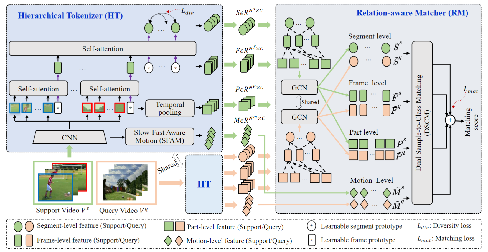
Hailiang Gao, Guosen Xie, Rui Yan, Qiongjie Cui, Hongyu Qu , Xiangbo Shu
IEEE Transactions on Multimedia (TMM ), 2024.
🎖️ Honors & AwardsNational Scholarship for Doctoral Students (博士生国家奖学金), 2026Ph.D. Student Special Program of the Young Talent Support Project , sponsored by CSIGExcellent Ph.D. Students Sponsorship Program of NJUST Postgraduate Research & Practice Innovation Program of Jiangsu Province
💻 ExperiencesEducation
Sep 2023 – Nov 2027 (expected)
Ph.D. Candidate · Nanjing University of Science and Technology Program: Integrated Master's–Ph.D. ProgramAdvisor: Prof. Xiangbo Shu
Aug 2025 – Present
Visiting Ph.D. Student · LV Lab, National University of Singapore
Apr 2024 – Apr 2026
Research Intern · Zhejiang University
Research Experience
Apr 2026 – Aug 2026
Research Intern · Ming Team, Ant Group
🔔 Academic ServiceJournal Reviewer International Journal of Computer Vision (IJCV) IEEE Transactions on Information Forensics and Security (TIFS) IEEE Transactions on Neural Networks and Learning Systems (TNNLS) IEEE Transactions on Multimedia (TMM) IEEE Transactions on Circuits and Systems for Video Technology (TCSVT) IEEE Transactions on Consumer Electronics (TCE) Knowledge-Based Systems (KBS) Expert Systems with Applications (ESWA) Neurocomputing The Visual Computer (TVCJ) Pattern Recognition Letters (PRL) Information Sciences Conference Reviewer IEEE Conference on Computer Vision and Pattern Recognition (CVPR 2026) European Conference on Computer Vision (ECCV 2026) International Conference on Machine Learning (ICML 2026) Annual Conference on Neural Information Processing Systems (NeurIPS 2025) International Conference on Learning Representations (ICLR 2025-2026) AAAI Conference on Artificial Intelligence (AAAI 2026-2027) International Joint Conference on Artificial Intelligence (IJCAI 2025-2026) ACM International Conference on Multimedia (ACM MM 2025-2026)